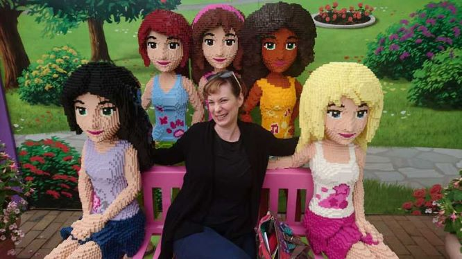

front-end dev student
Welcome to peek my portfolio website! I’m a career switcher currently studying web development at vocational college of Taitotalo, soon completing the studies.
Shortly about how my coding path has been started, as a young secondary school student I was interested in the field of information technology, but for some reason I was not encouraged enough. The life went by on studying and working in the other industry, besides my work managers had remarked how well and smoothly I learned to use new computer programs as well to guide other colleagues. I had been involved in the project as an end user at my former workplace, I had a great opportunity to see how the coders worked. I got glimpses in my mind and heart that is what I want to do.
I keep myself busy coding as well learning all the time from the senior or advanced developers by listening and participating in the Finnish community of Mimmit koodaa (women code), which is to help giving future generations an equal opportunity to study and flourish in the IT field. The diversity is always in my heart, I love to hear the stories about people and their lifes.
As a cooking lover I’ve figured out there are two first letters in cooking coder as “CC”, in Finnish it’s "kokkaava koodari" as there are also two first letter as “KK”, that’s why I’ve branded myself as a cooking coder in sense of humor! 😉
Questions popping up in your mind, providing more experiences to a junior front end developer or just wanting to network, feel free to contact me.